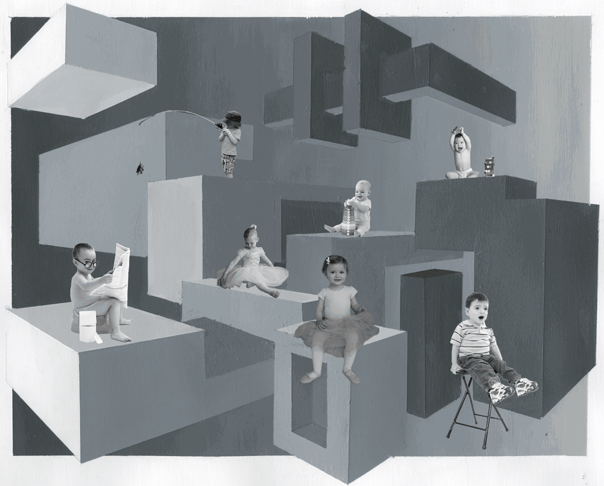

IDM 241 Case Study
Overview
This project is a functional build of three microinteractions, simple and complex. Microinteractions are small animations triggered by hovering, clicking, etc. that greatly contribute to the enjoyability of an interface. For this project, the microinteractions were coded using html, CSS, and JavaScript.
I chose to create my microinteractions for my portfolio website (LINK). The first microinteraction is for my art page and is a fade upon hover with the image title displaying in the center. The second microinteraction is for my projects page and is a redesign of the image cards that changes upon hover. The third microinteraction is for my projects page modals and flips through the tabs in the modal upon click.
Context & Challenge
Background
This is a coding project in which I was required to create three unique microinteractions. The microinteractions had to be an update for an existing website, but I had the freedom to choose what the microinteractions were. One microinteraction could be a simple microinteraction (easier to code, simpler animation), the other two needed to be complex microinteraction (more difficult to code, more going on in the animation).
Description
For my project, I chose to redesign a few pages on my portfolio website. The simple microinteraction was designed for my art page as a way to view the image title without navigating to a new page or modal. This interaction consists of a fade in that occurs upon hover. The complex microinteractions were for my project page. The first microinteraction is a redesign for the project cards. This microinteraction consists of a project card that changes upon hover, with an arrow appearing to prompt the user to continue to the project page modal. The second complex microinteraction is a redesign for the project page modals. This microinteraction consists of a modal with 3 tabs that turn in/ out on cube faces.
The Problem
Each microinteraction needed to be functional upon click or hover. This means I needed to use html, CSS, and JavaScript to watch for clicks or hovers and adjust the page accordingly. Each microinteraction should be pleasant and take place over an appropriate amount of time as to not keep users waiting for the microinteraction to run.
Goals & Objectives
The goal of this project is to create microinteractions that are functional, pleasant, and an upgrade of the current microinteractions on the page (if there are any). Along with the coded microinteraction, I need to also identify: the triggers (what starts the microinteraction), the rules (what happens), the feedback (what the user sees), and the loops/ modes (things that repeat/ additional modules).
Process & Insight
-
I began this project by planning my simple microinteraction. I first documented what website I would be redesigning.
Next I created an animation to show what the microinteraction would look like.
Then I listed all the triggers, rules, feedback, and loops/ modes.
triggers
The microinteraction is triggered by hovering over any of the images in the grid
rules
The image blur radiates into the center in the shape of the image
The image title is displayed over the blur
After hover, the title disappears and the image blur radiates out from the center
Feedback
The user sees the image they are hovering over blur and the title of the image display
Loops and Modes
There are no loops in this microinteraction
This microaction utilizes a mode to blur the image and display the text that appears over the image upon hover
-
The next step was to code my simple microinteraction. I did this using html and CSS. I used the CSS to place the image as a background image, which allowed me to expand the partially transparent border over the image, creating the illusion of the fade in. I wrote the title text in the html and created a fade in for that timed with the border fade in. Both fades are triggered by hovering over the image.
007
Fishing for Stars
Boxes & Babies
Colored Moon
Exhale
Cake
Eyes
Blue
-
Next, I planned my first complex micro interaction. I documented the website I would be redesigning.
I then created an animation to show this microinteraction.

I also listed all of the triggers, rules, feedback, and loops/modes.
triggers
The microinteraction will be triggered by hovering over the image card or clicking on the card.
rules
The cirlce will expand to cover about 1/3 of the card
The subtitle will change color to white
The card image will decrease in saturation
The arrow will change in opacity from 0 to 100
The title, subtitle, and arrow are positioned above the circle
Click brings user to new page
Feedback
The user will see the card they are hovering over change, with the circle growing, saturation decreasing, subtitle color changing, and arrow appearing
Loops and Modes
There are no loops in this microinteraction
This microaction utilizes one mode to take the user to a new page upon clicking
-
After this, I began coding my microinteraction. This was the most difficult of the three to code. For this microinteraction I used html, CSS, and JavaScript. I used JavaScript to toggle a class on and off upon hover. In CSS, I added all of the hover changes to that class: circle grow, subtitle change color, arrow appear, etc. This JavaScript addition greatly aided with the functionality of this microinteraction and was all I needed to get it working perfectly.
Green House
a plant care app.
Musical Astrology
what music genre are you?
-
Next, I planned my final complex microinteraction. I documented the website I would be creating this microinteraction for.
And I included an animation displaying the microinteraction I planned to build.

I also noted all of the triggers, rules, feedback, and loops/modes.
-
Lastly, I built my final microinteraction. For this microinteraction, I used html and CSS. I created a modal that sat next to 3 tab buttons. The modal has a unique screen for each tab. Then I CSS that made each new tab look like it was turning in on a cube face. I designed pages for each tab that match my example project and have clickable content.
The Solution
My final product is three microinteractions that I plan to integrate into my portfolio website. One microinteraction is simple, the other two are complex. The simple microinteraction consists of a fade that moves in from the edges upon hover, with the image title displaying in the center. The first complex microinteraction consists of a colored circle that expands upon hover, with the card image fading from grayscale to color as the circle expands. The second complex microinteraction consists of a modal with 3 tabs to the right, when a new tab is clicked, the current tab turns out on a cube face, with the new tab turning in.
The Results
Overall, this project is a success. I fulfilled the requirements, designing 3 microinteractions for an existing website, two complex and one simple. Beyond the requirements, the microinteractions themselves are successes, enjoyable and taking place over an appropriate amount of time. This was my first time working with microinteractions, and I learned a lot through the experience of visualizing and building each microinteraction. The one change I would make is to adjust my simple microinteraction to display the full image sizes rather than a cropped square of each. This is something I will work on as I begin to implement these microinteractions in my portfolio.